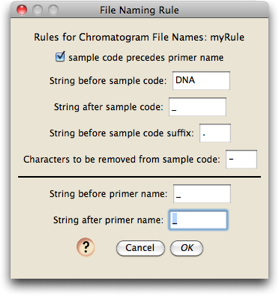
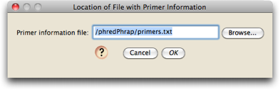

Installing Chromaseq; Preparing Phred, Phrap, and Phd2Fasta
Make sure that Chromaseq is installed properly, and that Phred, Phrap, and Phd2Fasta are compiled and installed correctly, and the phredpar.dat file is edited correctly.
Preparing the primer file
You will need to create a primer file documenting the gene fragments and a list of the names of their forward and reverse primers.
Preparing the sample names file
If you wish for your sequences to be named by something other than the sample codes contained in the file name, then you will need to create a text file that contains a list of the sample codes and the names to which they should be translated. See "Sample names file" for a description of the format of this text file.
Assembling the sequences: Running Phred and Phrap
If you wish to ask Mesquite to organize the chromatogram files, have Phred and Phrap assemble the contigs, and have Mesquite process the results, importing them into a new project, then choose Open Other>Process Chromatogram Files in Directory... from the File menu.
If you wish to ask Mesquite to do this but add the processed sequences to an existing project, then with that project open, choose Edit>Append Sequences From Chromatograms...
If you wish to ask Mesquite to do this but NOT import the sequences into a new or existing project, then choose Utilites>Process Chromatograms... when the Mesquite Log window is the frontmost window.
You will then be presented with a series of dialog boxes, the first being the one that allows you to tell Chromaseq how your chromatograms files are named.
Defining a naming rule
The first thing to do is define a Naming Rule, which describes how the chromatogram files are named. In particular, you need to give Mesquite enough details so that it can exactly find the sample code and primer name within the file name. For example, one of the example chromatograms has as a file name:
A11_A11DNA0446_D3_340852.ab1
In this name, the sample code is present immediately following the distinctive string of characters "DNA". The sample code ends with an underscore ("_"). The primer name in this file name is "D3"; it is preceded by an underscore, and followed by an underscore. The rest of the name (except, if you choose, the extension ".ab1") is irrelevant to Mesquite.
The first dialog you will see will let you choose the naming rule:

After first installing Chromaseq, there will be no naming rules, and you will need to define one. Touch on "Edit Naming Rules", and then in the list dialog that appears touch on "New" and give your rule a name; you will then see a dialog in which you can edit the naming rule:

The default naming rule is one that matches the file "A11_A11DNA0446_D3_340852.ab1".
Adjust your naming rule to match your file name structure. Once a naming rule is defined, it will be saved to disk and it will be an option for you in the future. All file names in the directory must use the same naming rule.
Choosing the modules for sequence names and primer information
You will next be asked to choose a module that will determine the names of your sequences:
Choices available currently are to name the sequence to be whatever the sample code is, or to look up the sequence names in a text file. If you choose to have the sequence names looked up in a text file, it will ask you for the location of the text file:

This file is a tab-delimited text file that should contain the sample codes in the first column, and then the sequence names to be used in the second and third columns, as described on the page about Samples.
Next, you will need to specify how information about primers is to be obtained. Currently the only option is a tab-delimited text file, and so you will need to specify the location of that file:

This format of this file is described on the Primers page.
Processing the Chromatograms
You will now be presented with the dialog box that lets you specify the options for processing chromatograms:

The top of this dialog also lists the choiced you have just made about how file names should be processed, the source of names for sequences, and the source of primer information.
Touch on the "Phred Phrap Locations & Options" button to set the locations of both the directory containing Phred, Phrap, and Phd2Fasta, as well as the location of the phredpar.dat file. In this dialog box you can also specify and particular options you wish to invoke when Phred and Phrap are run:
Once you are done with this dialog box, press OK, and you will be back at the Phred/Phrap/Chromaseq Options dialog box.
Press OK
You are now ready to have Phred and Phrap run. Press the OK button in the Phred/Phrap/Chromaseq Options dialog box. Mesquite's log window should show the details of the processing. You might want to bring this frontmost so that you can watch it. In addition, the operating system shell or Terminal should start up and you should see Phred and Phrap produce lots of information that scrolls by.
At the end, you should see Mesquite open a character matrix editor and present you with the results.
Viewing the sequences in Mesquite's editor
Mesquite will present imported sequences organized with all sequences from one gene fragment together in one editor, with a different editor for each gene fragment. By default the editor will be shown in "bird's eye view" (as if from a distance, with each base occupying only a thin vertical strip), with the color of a base being related to the quality score for that base as judged by Phred and Phrap.
If you turn on the character matrix's Colors Legend (by touching on the  button below the taxon names), you can see the meaning of the colors:
button below the taxon names), you can see the meaning of the colors:
The color of the taxon name is in proportion to the number of high-quality bases in its sequence, with darker taxon names indicating sequences containing, on average, lower-quality bases.
Viewing a sequence's chromatograms
To view the chromatograms underlying a sequence, touch on that sequence using the View Chromatogram Tool ( ). A window will appear containing that sequence's chromatograms:
). A window will appear containing that sequence's chromatograms:
The main panel shows the chromatogram traces. Ones with names in red are chromatograms that run from right to left; names in black means the chromatograms run from left to right. The base colors under the traces are shown using the same quality score coloring as calculated by Phred and used in the imported matrix. At the bottom are two versions of the consensus sequence: the top one, the untrimmed version as produced by Phred/Phrap and as modified by Mesquite; the bottom version, or edited version as it appears in the matrix. The colors of the bases in these sequences also indicates the base quality scores as determined by Phrap.
A few graphical features of note are:
- Conflicts between reads are shown as pink or red bars in the "Original Untrimmed" sequence panel. If the reads that conflict are of low quality, the bars will be pink; if they are of high quality, they will be red.
- The brown bars above a base call and under a peak in each read indicate that that peak was the one used by Phrap as the primary peak on which the call for the consensus was based.
- You can show or hide various element by using the Chromatograms>Show submenu, including traces of bases (e.g., hide the G trace).
- You can ask to have low-quality sections of reads dimmed so that they don't visually distract from the high-quality reads in those some regions.
Some navigational features of note are:
- The left and right arrow keys can be used to move along the chromatograms. You can choose (using the Chromatograms>Arrow Keys submenu) whether these move to the next base, the next base with a conflict, or the next low-quality base.
- Up and down arrow keys move you to the start and end of the contig.
Altering calls for existing bases
If you would like to edit a base call, use the pointer to select the desired site in the "Edited in Matrix" sequence (at the bottom of the panel). Type in the base you would like present at that site, and the corresponding character matrix will be updated with the change. Any base that has been so edited is marked by a black bar underneath it. |